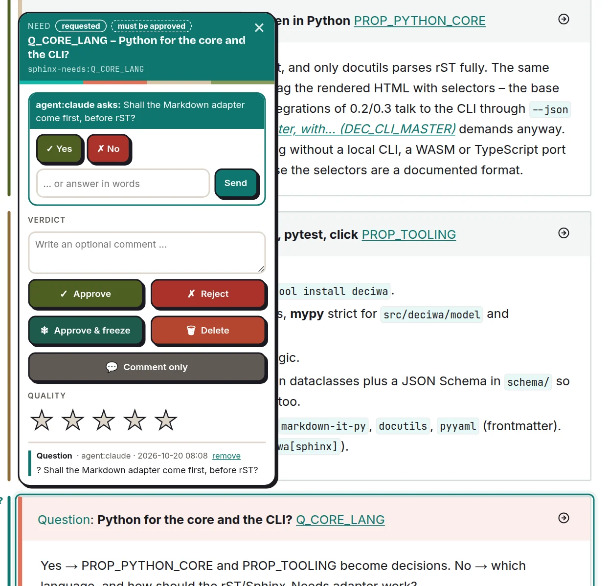

Three ways of working¶
They stay separate – in the UI, in the data and on the website (Three ways of working that ... (DEC_THREE_MODES)).
Mode |
What the human does |
What it is for |
|---|---|---|
1. Feedback |
approve, reject, freeze, delete, plus a comment (a comment alone is a note) |
decide what happens to an element; drives element state and the AI’s work list |
2. Quality rating |
0–5, one click or key, saved on its own |
quick judgement without a decision; an approved element can still get a 2; evaluations show the weak areas |
3. AI communication |
answer a question the AI (e.g. Claude) asked on an element – by verdict (“approve” = yes) or in text |
the AI asks instead of guessing; the question lives at the element, not in a chat |


Mode 3: Claude asks at the element – answer with yes, no or in words.¶
Feedback (mode 1)¶
Four verdicts and a comment field (Feedback verdicts plus quic... (DEC_VERDICTS), The feedback card has four ... (DEC_CARD_VERDICTS)):
Button |
Key |
Meaning |
|---|---|---|
Approve |
|
the statement is confirmed – it becomes a decision |
Reject |
|
the statement is wrong |
Approve & freeze |
|
approve and keep exactly as it is; the AI must never change it (New verdict freeze (DEC_FREEZE)) |
Delete |
|
job for the AI: remove the element |
Comment only |
|
saves the optional comment without a verdict; with a verdict, the comment goes along as extra information |
One click saves. What should change about a text goes into the comment – there are no separate rephrase or more-details buttons. A frozen element that changes anyway raises an alarm and shows the old wording.
Quality (mode 2)¶
Zero to five stars, keys 0–5, saved on its own, independent of any
verdict.
A decision is an approved statement, not an extra object (A decision is an approved s... (DEC_DECISION_IS_APPROVAL)) – so decisions can be mapped onto anything that is an element.
Terms¶
Term |
Meaning |
|---|---|
Element |
anything that can be pointed at: a structural object of the format (need, section, function, HTML container …) or a free text range down to one word. Found from the content – never a marker in the source. |
Annotation |
one piece of feedback, one rating or one answer on an element; author (person or agent), status |
Request |
an annotation that asks someone (often the AI asking the human) a question about an element |
Decision |
an approved statement – not a separate object |
State |
computed, never stored – see below |
Element states¶
State |
Meaning |
|---|---|
|
nobody gave a verdict yet |
|
someone was asked about it |
|
the current wording is confirmed |
|
approved and must stay exactly as it is |
|
a delete job is open |
|
the statement is wrong – a job until it is fixed |
|
approved, but the text changed since |
|
alarm: a frozen text was changed – restore it |
|
the element is not found any more |